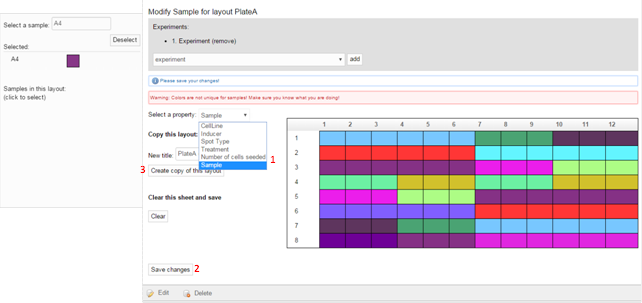

SAVANAH User Guide
A thorough introduction to the features of "Sample management and visual analysis of high-throughput screens - SAVANAH"
Table of Contents
Step 2 : Adding sample information and creating plate layouts manually
Number of cells or cell material
Manual creation of projects and experiments
Creating a plate layout manually
Creating a plate object manually
Step 3 : Uploading a screening library.
Step 4 : Creating library dilutions for assay plates
Step 5 and 6 : Creating projects and new experiments
Step 7 : Uploading single or ZIP-format readout files
Step 8 : Visualizing the readouts
Step 9 : Exporting information to R
Step 10 : Bug reporting and Final Remarks
Getting Started
Login
Go to http://130.225.157.237:8080/SAVANAH/ (06/06/2016) and login with
username "admin" and the password "NanoCAN".

Welcome to SAVANAH!
On the front page you can find 10 steps to use SAVANAH for managing high-throughput screening data. By clicking on each number, users can easily navigate through the various steps such as creating plates and libraries. Once a step is completed, the user can get back to the 10-step list by clicking on the SAVANAH banner on the top of the page. This guide will take you through each of these 10 steps while providing examples and highlighting the available features.

Step 1 : Adding a plate type
Before entering any libraries or experiments in SAVANAH, the user must ensure that the plate type used is available in the web-application. Either, click on the first of the 10 steps, or click on "Plate" in the black navigation bar and select "Plate Types" from the drop down menu. In the right corner select New PlateType. Select the shape of the well from the drop down menu and enter a name for the new plate type as well as its vendor. A checkbox allows selecting if the plate is ultra-low adhesive, i.e. coated.
Step 2 : Adding sample information and creating plate layouts manually
After adding at least one plate type, general information needed to define samples should be entered. These properties are ideally prepared before creating plate layouts (e.g. for small customized experiments) and before moving to step 4. By clicking "Layout" and selecting from the drop down menu different properties supported by SAVANAH such as Cell lines, Inducers, Number of cells seeded, Treatments and Sample names (including accession identifiers) can be managed. These properties are also accessible as part of step 2 in the guide.
Cell lines
We first demonstrate how to add sample information by example of adding a cell line. Select Layout > "CellLines". Annotated cell lines used in prior experiments will be displayed.
Next, select "New Cell line" (circle) in the top right corner to annotate further cell lines. Choose a name and a color for displaying the property. Click "Create" in the bottom left corner.

Library control samples
As a second example, samples may be added to each plate. While for high-throughput screening libraries, the sample names can be created automatically (see section 4), it may be necessary to create samples manually for smaller customized experiments or for defining controls used in a HTS (see section 5).
To create samples for annotation, select Layout > "Samples" and press "New Sample" (blue circle). Specify the sample name, -type and :target if known. Furthermore, select if the sample is a control, and if so, of which kind. Last, select a color and click "Create" in the bottom left corner.
Inducers and treatments
Next, inducers and/or treatments may be added in a similar fashion as samples and cell lines. These serve to further characterize the samples. For instance, to compare readouts between cells treated with a particular drug and untreated cells or for inducing the expression or repression of the expression of a particular gene. As described above, select Layout > "Inducers"/"Treatments" and press "New" in the right corner. Enter the name and concentration for inducers and/or treatments and assign them colors. Click "Create" in the bottom left corner.
Number of cells or cell material
Last, specify the number of seeded cells for the experiment, or the amount of obtained cell material if this is more applicable. Select Layout > "Number of Cells Seeded" and click "New Number of cells seeded" in the right corner. Enter the name and assign a color. Press "Create" in the bottom left corner.
Note that all of the mentioned properties should be entered before creating a plate layout (explained below) or before creating an experiment from a library (explained in step 5+6).
Manual creation of projects and experiments
Plate layouts, regardless if created manually or through a library screen, need to be assigned to an experiment, which in turn are grouped and organized in projects. In the black drop-down menu, select Organize > "Create New Project" or click on step 5 on the main page. Enter a name and description and click "Create" in the bottom left corner to create the project.
Next, experiments may be added to the created project. This can be done manually (described first) or from a diluted screening library (described in Step 5 and 6). Press Organize > "Create New Experiment" from the drop down menu on the front page. Fill in information about the experiment and select the associated project from the drop-down menu. Press "Create" in the bottom left corner to save changes. When a large number of plate layouts are stored in SAVANAH, listing all of them will prevent the user from finding a particular one quickly. Thus, a filter option is available (blue arrow), where only plates and plate layouts associated with a selected experiment or project are shown. Alternatively, the user can use the search box to search the entire database using an arbitrary search term, such as a barcode or a name (red arrow).
Creating a plate layout manually
Now, to manually create an experimental plate layout select Layout > "Create New PlateLayout". Enter the name of the plate, the format and select at least one experiment this layout is associated with. Click "Create" in the bottom left corner.
Next, you will see a visual representation of a plate. SAVANAH keeps track of sample information in multiple layers with one single layer corresponding to one of the sample properties introduced in step 2. Please use the drop-down menu "Select a property" to select one of these layers for the shown plate. For example, select "Sample" in drop down menu (1). Next, select a sample attribute in the field on the left, and click in the wells which contain this particular sample. Alternatively if several wells contain the same attribute, draw a box with the mouse that covers the respective wells. The color code will reflect the loading of your plate and if a well is mistakenly loaded this can be removed by selecting "None" in the attributes list and clicking on the well(s)-in-question. After filling in one property, make sure to save your work (2) before moving on to the next property. If needed, it is possible to create copies of plate layouts. This is useful in scenarios where only few properties change from experiment to experiment, such as number of cells seeded or the cell line used. We suggest providing an informative name before pressing "Create Copy of this layout" (3). NB: It should be emphasized that you will now be working on the copy unless you switch back to the original plate! Now change the desired properties (1), which differ between the original and the copy layout and save your changes (2).

You can list all created layouts by clicking on Layout > "List PlateLayouts".
Creating a plate object manually
The idea of using plate layouts is to avoid entering the same sample information multiple times that may be shared between, for instance, replicate plates. Thus, SAVANAH allows creating plate objects, which are linked to a specific plate layout and hold information on the physical properties of the plate such as type or barcode or replicate number. In addition, each plate can be linked to one or several readout measurements, which can be uploaded to the system for each plate individually or as a batch upload using a zip file (shown in step 7). If a screening library is used (as in Step 4-6) plate layouts as well as corresponding (replicate) plates will be prepared automatically.
Step 3 : Uploading a screening library
High-throughput screens often consist of hundreds or thousands of molecules that are combined in a library. To avoid creating all plate layouts manually and to efficiently manage sample information and well locations in each plate of the library, these must be added to the system. To this end, SAVANAH accepts tab separated files provided they have a specific header (Supplementary table 1). SAVANAH will avoid duplicate entries by comparing uploaded samples to known ones by comparing sample names and accession numbers. Incomplete libraries that are, for instance, missing wells, will lead to an error and will not be accepted by the system. If the library file cannot be parsed because of format issues or data parsing problems, the system will also stop the operation with an error to avoid inconsistencies in the database. To upload a library press Library > "Create New Library", or press number 3 on the front page.
Here, the user may enter information on the library content, catalogue number, sample- and accession types and press "Submit" (blue circle).
Step 4 : Creating library dilutions for assay plates
The library can then next be used for the generation of serially diluted master-, mother- and daughter plates. To do so, either press step 4 on the main page or select Library > "Library Dilutions" and open the folder of the desired library. To the right, a panel for creating library dilutions appears. You may now specify how many plates you want in a particular dilution and customize the barcode that will be applied to the plates. Here, the place holders %L%, %MA%, %MO%, %DA% refer to the index of the library-, master-, mother-, and daughter plates, respectively. Press "Create" between each set of plates (blue circle), and select them from the tree structure to the right to create the next level of diluted plates. For example, to create a set of daughter plates from a particular mother plate, first click on the mother plate and then add daughter plates on the right hand panel. Note that only Daughter plates can be used as assay plates in an experiment. Thus, if you do not plan to use serial dilutions across master and mother plates simply use a single dummy entry for each of them.
Step 5 and 6 : Creating projects and new experiments
Now, the diluted libraries can be used in an actual experiment. As previously mentioned, experiments are organized in projects. If not created yet, please click on step 5 on the main page. Enter a name and description and click "Create" in the bottom left corner to create the project. The procedure is identical to what is explained in step 2. Next, experiments can be added to the created project. To do this using the above created screening library, select number 6 on the front page or press Organize > "Create Experiment from Library". Here, experimental information is entered and the user must select a previously created library.
Press "Continue with replicate plate selection" (in the bottom left corner) and select one or several sets of "Daughter"-plates, where each set represents the full library (with a diluted copy for each of the library plates). Note that only sets are shown that have not been assigned to an experiment yet. When more than one set of daughter-plates is selected, these serve as replicates in the experiment.
Next, default settings that apply to the entire screen can be selected. These properties, such as cell lines, number of cell seeded, inducers and treatment, should be prepared in advance as described in step 2. Prepare all the properties needed and enter them in the in the appropriate experiment. This step allows users to conveniently assign properties that apply to the entire screen since it can be quite tedious to assign all of this information manually to each plate layout when performing HTS experiments with large libraries.
It is customary in HTS to leave some wells, usually a particular row or column, empty. This gives experimenters the possibility to decide which type of controls should be included in a particular experiment. This is important since different types of experiments and assays require different controls. The user can specify control samples for empty wells. The samples can be placed simply by clicking the respective wells. Note that if a well is not empty and already contains a sample, the control sample will be ignored. Moreover, we assume that the control well layout applies to all plates in a screen. If this is not the case, this step can be omitted and controls can be assigned in each plate layout individually. The use of plate layouts is then again an advantage, since users do not need to assign this information to each replicate plate independently.

After clicking "Create Experiment" in the lower left corner, a second message will ask for confirmation of the information for this particular experiment.
Step 7 : Uploading single or ZIP-format readout files
In step 7 it is possible to upload plate readouts such as, e.g., cell viability counts for several plates or an entire screen via a ZIP-file. However, before uploading readouts, please create the desired type of assay with which the readout was obtained. In the black bar, click Readout > "Assay Types". Then select "New AssayType" in the top right corner (blue circle).
Give the assay a name, select a type (Fluorescence, absorbance or luminescence) and a wavelength and press "Create" in the bottom left corner.
Now, the user can upload readouts in batches by either clicking step 7 on the front page, or by clicking on Readout > "Batch import readout data from zip file" from the drop down menu.
IMPORTANT: For the batch upload to work, the ZIP file should contain single readout files for each plate. For each file, the name must match the barcode applied when creating the library dilution in step 4. In this way the readouts will automatically be added to the corresponding plates in SAVANAH. Note, that in case the plates have been created automatically from a serially diluted library, the barcodes are derived using the place holders as described in step 4. Please, keep in mind that the placeholders are incremented automatically when new dilutions are added and that the plates within one set are sequentially numbered, i.e. this is the index of the plate in the library. The file types accepted by SAVANAH are; .xlsx, .csv, and tab separated .txt formats. Fill in the information about the readout and select the corresponding ZIP-file. Click "Upload zip file" in the lower left corner.
SAVANAH assumes that all readout files in a ZIP file are structured in the same manner. If this is not the case, the user needs to upload readouts individually. To provide the best possible flexibility with regards to the input format, SAVANAH will attempt to extract the header of the first readout file. Here, the user can indicate if a certain number of lines at the top of the readout files need to be skipped and what the minimum number of columns is that should be read. Press "Read header from first file" (blue arrow). Now, the user should match the columns of the readout file to the properties known to SAVANAH. This can be done using the provided drop down menus. If "Do not use" is selected, the respective column will be ignored. Press "Import readout files" (dark blue arrow). Subsequently, a list with all the readouts is shown and readouts can be selected for visual inspection.
For smaller experiments, it is usually easier to upload individual readout files to the plates. Either, select a particular plate via Plate > "List Plates" or via the search function. Next, click on the Readouts tab and on "Add Readout". Alternatively, you can add a readout via clicking on Readout > "Create new Readout". The former approach makes it easier to select the correct plate, which has to be selected manually in the latter case. Enter the required information and press "Create" (Blue Arrow). In contrast to the batch upload it is also possible to add an image or an experimental protocol.
As for the batch import, the user may now match columns of the readout file to the properties in SAVANAH using the drop down menus in the same fashion as described above for the batch import functionality. Press "Import readout file" in the bottom left corner.
Step 8 : Visualizing the readouts
To visualize the readouts added to the individual plates press step 8 on the front page. Alternatively, select the plate of interest under Plate > "List Plates". Press the panel saying "Readouts" and click on the readout file to visualize the signal data as an interactive heatmap or scatter plot. By holding the mouse over spots in the scatter plot, information on sample name and signal is accessible.
Step 9 : Exporting information to R
As an important feature, SAVANAH allows the user to export the plate data together with sample information and associated readouts to R for further analysis. Alternatively, data can be exported directly to HiTSeekR (List et al., Comprehensive Analysis of High-Throughput Screens with HiTSeekR, Nucleic Acid Research, in press, http://hitseekr.compbio.sdu.dk), an online tool for the analysis of various types of high-throughput screening data such as RNAi or CRISPR/Cas9 screens, miRNA inhibitor and mimics screens as well as small compound screens. HiTSeekR supports its users in raw data processing, normalization, hit discovery and down-stream systems biology analysis. SAVANAH complements HiTSeekR with additional sample management capabilities. To select plates for export, the user can filter by project, experiment or specific plate layouts. Plates that the user wants to export may be selected by click + SHIFT/CTRL. Then, press the desired logo to continue to the analysis part or copy the code into R to start analysing the data. Note, that for HiTSeekR to work, the user must either use the public demo versions of both, SAVANAH and HiTSeekR, or have both software applications operating within the same firewall.
Step 10 : Bug reporting and Final Remarks
Last, by clicking on step 10 on the front page, the user will be taken to the SAVANAH github page, where issues and feature requests can be reported https://github.com/NanoCAN/SAVANAH/issues.